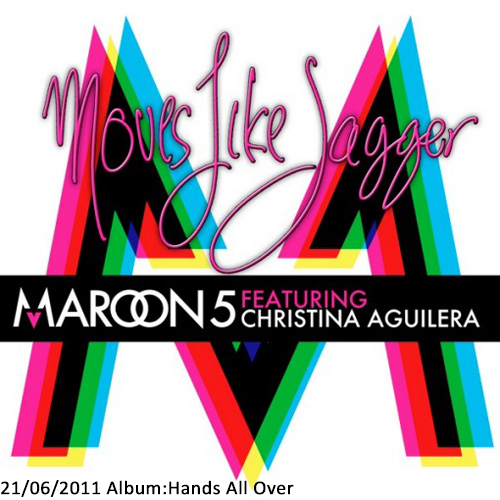

A historia do Maroon 5 começou na epoca do colegial, em Los Angeles, na California. Os integrantes eram amigos, tinham 17 anos, e resolveram montar uma banda, inicialmente chamada de Kara's Flowers. Um ano apos o seu primeiro show, em 1995, o grupo começou a ser procurado pela indústria fonográfica e, depois, assinou contrato com a Reprise